# Import the TEDS 2016 data in Stata format using the haven package
## install.packages("haven")
library(haven)
TEDS_2016 <- read_stata("https://github.com/datageneration/home/blob/master/DataProgramming/data/TEDS_2016.dta?raw=true")
# Prepare the analyze the Party ID variable
# Assign label to the values (1=KMT, 2=DPP, 3=NP, 4=PFP, 5=TSU, 6=NPP, 7="NA")
TEDS_2016$PartyID <- factor(TEDS_2016$PartyID, labels=c("KMT","DPP","NP","PFP", "TSU", "NPP","NA"))Running Exploratory Analysis
(https://datageneration.io/dataprogramming/r-programming.html#illustration)
# Check the variable
attach(TEDS_2016)
head(PartyID)[1] NA NA KMT NA NA DPP
Levels: KMT DPP NP PFP TSU NPP NAtail(PartyID)[1] NA NA DPP NA NA NA
Levels: KMT DPP NP PFP TSU NPP NALook at the frequency of the data
# Run a frequency table of the Party ID variable using the descr package
## install.packages("descr")
library(descr)
freq(TEDS_2016$PartyID)
TEDS_2016$PartyID
Frequency Percent
KMT 388 22.9586
DPP 591 34.9704
NP 3 0.1775
PFP 32 1.8935
TSU 5 0.2959
NPP 43 2.5444
NA 628 37.1598
Total 1690 100.0000Adding colors and values to our chart
library(ggplot2)
ggplot(TEDS_2016, aes(PartyID)) +
geom_bar(aes(y = (..count..)/sum(..count..),fill=PartyID)) +
scale_y_continuous(labels=scales::percent) +
ylab("Party Support (%)") +
xlab("Taiwan Political Parties") +
theme_bw()Warning: The dot-dot notation (`..count..`) was deprecated in ggplot2 3.4.0.
ℹ Please use `after_stat(count)` instead.
Correcting the colors and using the “tidyverse” library
##install.packages("tidyverse")
library(tidyverse)── Attaching core tidyverse packages ──────────────────────── tidyverse 2.0.0 ──
✔ dplyr 1.1.4 ✔ readr 2.1.5
✔ forcats 1.0.0 ✔ stringr 1.5.1
✔ lubridate 1.9.4 ✔ tibble 3.2.1
✔ purrr 1.2.0 ✔ tidyr 1.3.1
── Conflicts ────────────────────────────────────────── tidyverse_conflicts() ──
✖ dplyr::filter() masks stats::filter()
✖ dplyr::lag() masks stats::lag()
ℹ Use the conflicted package (<http://conflicted.r-lib.org/>) to force all conflicts to become errorsTEDS_2016 %>%
count(PartyID) %>%
mutate(perc = n / nrow(TEDS_2016)) -> T2
ggplot(T2, aes(x = reorder(PartyID, -perc),y = perc,fill=PartyID)) +
geom_bar(stat = "identity") +
ylab("Party Support (%)") +
xlab("Taiwan Political Parties") +
theme_bw() +
scale_fill_manual(values=c("steel blue","forestgreen","khaki1","orange","goldenrod","yellow","grey"))
Assignment 02 Questions:
What problems do you encounter when working with the dataset?
# Display the first 5 rows and first 9 columns
head(TEDS_2016[, 1:9], 5)# A tibble: 5 × 9
District Sex Age Edu Arear Career Career8 Ethnic Party
<dbl+lbl> <dbl+l> <dbl+l> <dbl+l> <dbl+l> <dbl+l> <dbl+l> <dbl+l> <dbl+lb>
1 201 [Yi Lan … 2 [Fem… 4 [50-… 4 [Col… 1 [Tai… 1 [Hig… 1 [Civ… 1 [Tai… 25 [Neu…
2 201 [Yi Lan … 2 [Fem… 2 [30-… 5 [Abo… 1 [Tai… 2 [Low… 3 [CLE… 2 [Bot… 25 [Neu…
3 201 [Yi Lan … 1 [Mal… 5 [Abo… 5 [Abo… 1 [Tai… 1 [Hig… 1 [Civ… 2 [Bot… 3 [Lea…
4 201 [Yi Lan … 1 [Mal… 4 [50-… 2 [Jun… 1 [Tai… 4 [WOR… 4 [Lab… 1 [Tai… 25 [Neu…
5 201 [Yi Lan … 2 [Fem… 5 [Abo… 1 [Bel… 1 [Tai… 3 [FAR… 5 [FAR… 9 [Nor… 25 [Neu…One of the main challenges with the TEDS_2016 dataset is that many variables are coded numerically without accompanying labels, making interpretation difficult. For instance, the “sex” variable contains values like 1 and 2, but there is no immediate indication of which value corresponds to which gender. Similarly, variables such as “education” and “age” appear as numerical codes that are unclear without a codebook or variable dictionary. This lack of descriptive metadata makes it hard to conduct meaningful analysis without first decoding the variables. In addition there are missing values in various cells in our database giving us “N/A”.
How to deal with missing values?
One approach to dealing with missing values is to remove rows that contain them, which helps maintain the integrity of the analysis by ensuring that only complete cases are used.
(Next step) Explore the relationship between Tondu and other variables including female, DPP, age, income, edu, Taiwanese and Econ_worse. What methods would you use?
To explore these relationships, I used grouped bar charts and boxplots to examine how political and demographic factors relate to Tondu preferences (views on unification vs. independence). For categorical variables like gender, DPP support, and Taiwanese identity, I used grouped bar charts to show the distribution of Tondu preferences. For continuous variables like age and income, I used boxplots to illustrate how median values and spreads differ across Tondu groups. This approach allows for both a categorical comparison and a clear view of variation within numeric data.
library(ggplot2)
library(dplyr)
# remove rows with n/a data
TEDS_2016 <- TEDS_2016 %>%
filter(!is.na(Tondu))
# Prepare Education levels only (leave Tondu as-is)
TEDS_2016 <- TEDS_2016 %>%
mutate(
edu_level = factor(edu, levels = 1:5,
labels = c("Primary", "Middle", "High", "College", "Postgrad"))
)
# 1. Gender
ggplot(TEDS_2016, aes(x = Tondu, fill = factor(female))) +
geom_bar(position = position_dodge(width = 0.8)) +
scale_fill_manual(values = c("#FF9999", "#6699CC"), labels = c("Male", "Female")) +
labs(x = "Tondu Preference", y = "Frequency", fill = "Gender") +
ggtitle("Tondu preference by Gender") +
theme_bw() +
theme(axis.text.x = element_text(angle = 30, hjust = 1))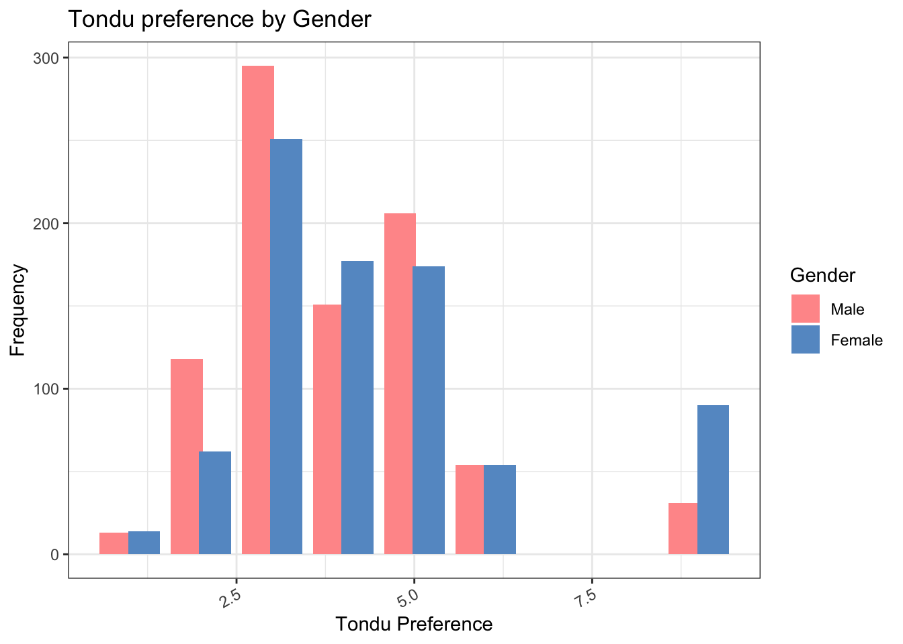
# 2. DPP Support
ggplot(TEDS_2016, aes(x = Tondu, fill = factor(DPP))) +
geom_bar(position = position_dodge(width = 0.8)) +
scale_fill_manual(values = c("#FFD700", "#228B22"), labels = c("No", "Yes")) +
labs(x = "Tondu Preference", y = "Frequency", fill = "DPP Support") +
ggtitle("Tondu preference by DPP Support") +
theme_bw() +
theme(axis.text.x = element_text(angle = 30, hjust = 1))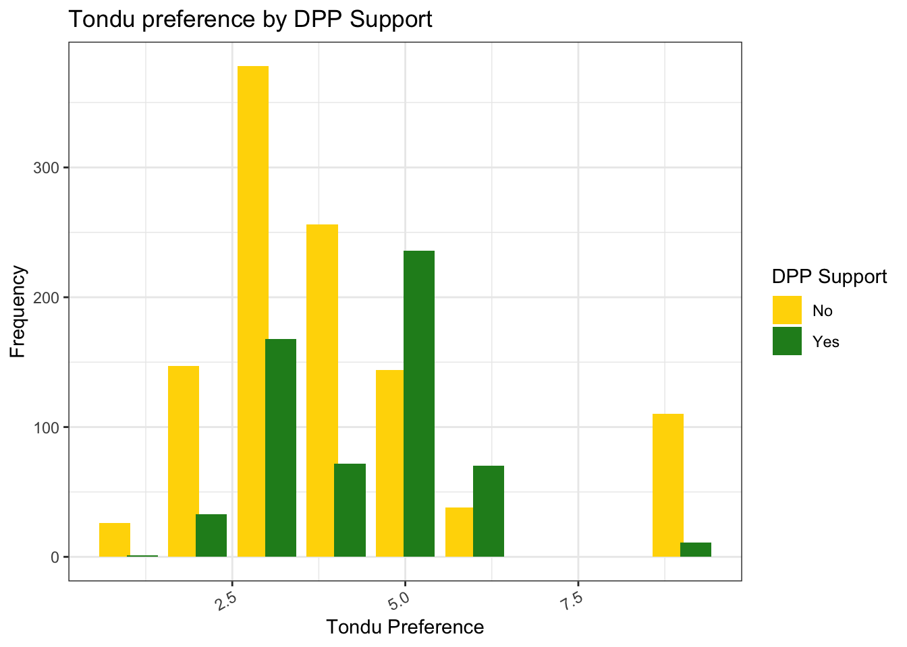
# 3. Taiwanese Identity
ggplot(TEDS_2016, aes(x = Tondu, fill = factor(Taiwanese))) +
geom_bar(position = position_dodge(width = 0.8)) +
scale_fill_manual(values = c("#D95F02", "#1B9E77"), labels = c("No", "Yes")) +
labs(x = "Tondu Preference", y = "Frequency", fill = "Taiwanese Identity") +
ggtitle("Tondu preference by Taiwanese Identity") +
theme_bw() +
theme(axis.text.x = element_text(angle = 30, hjust = 1))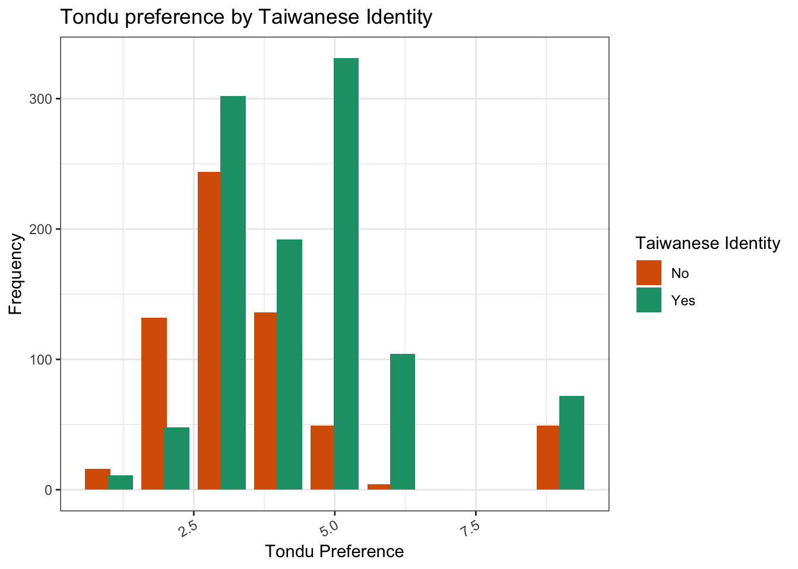
# 4. Economic Perception
ggplot(TEDS_2016, aes(x = Tondu, fill = factor(Econ_worse))) +
geom_bar(position = position_dodge(width = 0.8)) +
scale_fill_manual(values = c("#A6CEE3", "#FB9A99"), labels = c("No", "Yes")) +
labs(x = "Tondu Preference", y = "Frequency", fill = "Economy Worse?") +
ggtitle("Tondu preference by Economic Perception") +
theme_bw() +
theme(axis.text.x = element_text(angle = 30, hjust = 1))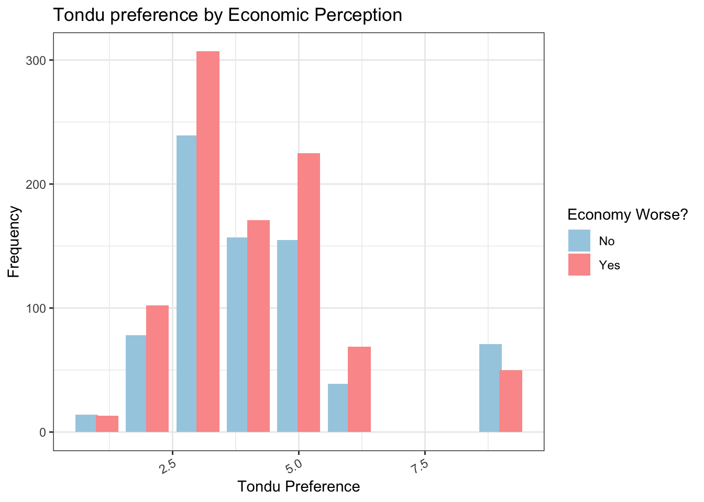
# 5. Education
ggplot(TEDS_2016, aes(x = Tondu, fill = edu_level)) +
geom_bar(position = position_dodge(width = 0.8)) +
scale_fill_brewer(palette = "Set2") +
labs(x = "Tondu Preference", y = "Frequency", fill = "Education Level") +
ggtitle("Tondu preference by Education") +
theme_bw() +
theme(axis.text.x = element_text(angle = 30, hjust = 1))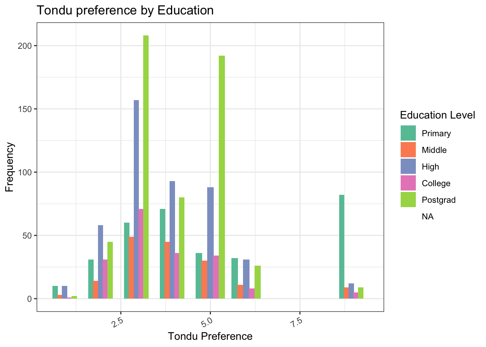
# 1. Tondu vs Age (Boxplot)
ggplot(TEDS_2016, aes(x = Tondu, y = age, fill = Tondu)) +
geom_boxplot(outlier.shape = NA, alpha = 0.7) +
scale_fill_brewer(palette = "Set3") +
labs(x = "Tondu Preference", y = "Age") +
ggtitle("Age Distribution by Tondu Preference") +
theme_bw() +
theme(axis.text.x = element_text(angle = 30, hjust = 1),
legend.position = "none")Warning: Continuous x aesthetic
ℹ did you forget `aes(group = ...)`?Warning: The following aesthetics were dropped during statistical transformation: fill.
ℹ This can happen when ggplot fails to infer the correct grouping structure in
the data.
ℹ Did you forget to specify a `group` aesthetic or to convert a numerical
variable into a factor?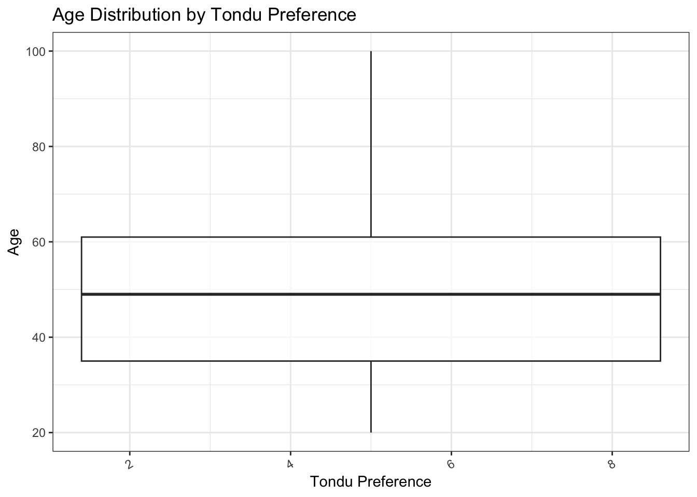
# 2. Tondu vs Income (Boxplot)
ggplot(TEDS_2016, aes(x = Tondu, y = income, fill = Tondu)) +
geom_boxplot(outlier.shape = NA, alpha = 0.7) +
scale_fill_brewer(palette = "Set2") +
labs(x = "Tondu Preference", y = "Income") +
ggtitle("Income Distribution by Tondu Preference") +
theme_bw() +
theme(axis.text.x = element_text(angle = 30, hjust = 1),
legend.position = "none")Warning: Continuous x aesthetic
ℹ did you forget `aes(group = ...)`?
The following aesthetics were dropped during statistical transformation: fill.
ℹ This can happen when ggplot fails to infer the correct grouping structure in
the data.
ℹ Did you forget to specify a `group` aesthetic or to convert a numerical
variable into a factor?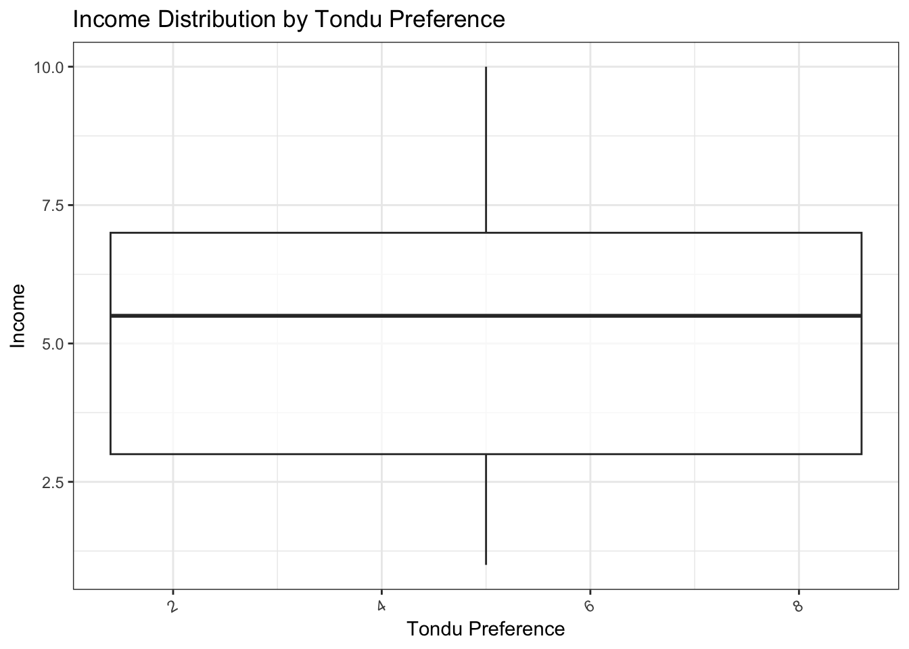
# 3. Tondu vs Taiwanese Identity (Stacked bar)
ggplot(TEDS_2016, aes(x = Tondu, fill = factor(Taiwanese))) +
geom_bar(position = position_dodge(width = 0.8)) +
scale_fill_manual(values = c("#E41A1C", "#377EB8"), labels = c("No", "Yes")) +
labs(x = "Tondu Preference", y = "Frequency", fill = "Taiwanese Identity") +
ggtitle("Tondu Preference by Taiwanese Identity") +
theme_bw() +
theme(axis.text.x = element_text(angle = 30, hjust = 1))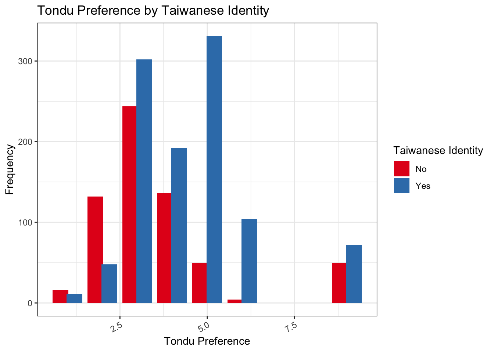
# 4. Tondu vs Economic Perception
ggplot(TEDS_2016, aes(x = Tondu, fill = factor(Econ_worse))) +
geom_bar(position = position_dodge(width = 0.8)) +
scale_fill_manual(values = c("#A6CEE3", "#FB9A99"), labels = c("No", "Yes")) +
labs(x = "Tondu Preference", y = "Frequency", fill = "Economy Worse?") +
ggtitle("Tondu Preference by Economic Perception") +
theme_bw() +
theme(axis.text.x = element_text(angle = 30, hjust = 1))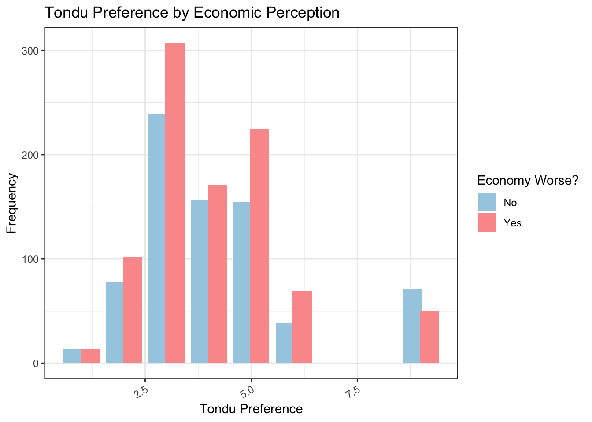
(Next step) How about the votetsai variable (vote for DPP candidate Tsai Ing-wen)?
To explore the relationship between support for Tsai Ing-wen and national identity preferences, I created a grouped bar chart comparing Tondu responses by voting behavior. This visualization shows how views on unification versus independence differ between those who voted for Tsai and those who did not in the 2016 election.
library(ggplot2)
library(dplyr)
# Filter and prep
TEDS_2016 <- TEDS_2016 %>%
filter(!is.na(Tondu), !is.na(votetsai_all)) %>%
mutate(
votetsai_label = factor(votetsai_all,
levels = c(0, 1),
labels = c("Did Not Vote Tsai", "Voted Tsai"))
)
# Plot: Grouped bar chart
ggplot(TEDS_2016, aes(x = Tondu, fill = votetsai_label)) +
geom_bar(position = position_dodge(width = 0.8)) +
scale_fill_manual(values = c("#E41A1C", "#377EB8")) +
labs(x = "Tondu Preference", y = "Frequency", fill = "Vote for Tsai?") +
ggtitle("Tondu Preference by Vote for Tsai Ing-wen") +
theme_bw() +
theme(axis.text.x = element_text(angle = 30, hjust = 1))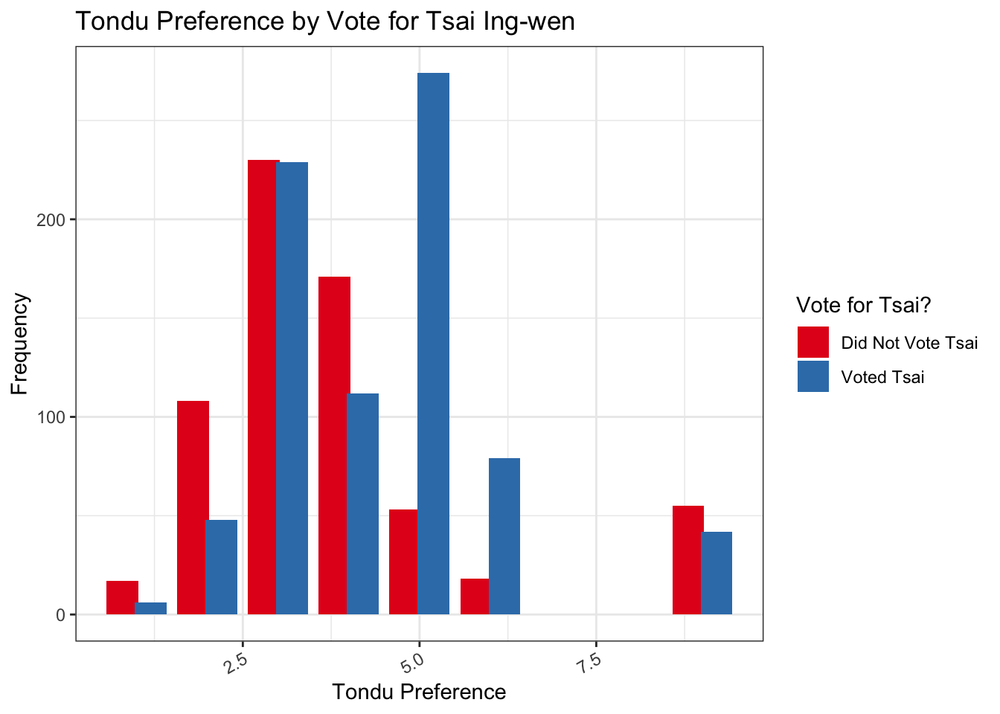
(Next step) Generate frequency table and barchart of the Tondu variable. Assign labels to the variable using the following:
TEDS_2016$Tondu<-as.numeric(TEDS_2016$Tondu,labels=c("Unification now”, “Status quo, unif. in future”, “Status quo, decide later", "Status quo forever", "Status quo, indep. in future", "Independence now”, “No respons"))library(descr)
freq(TEDS_2016$Tondu)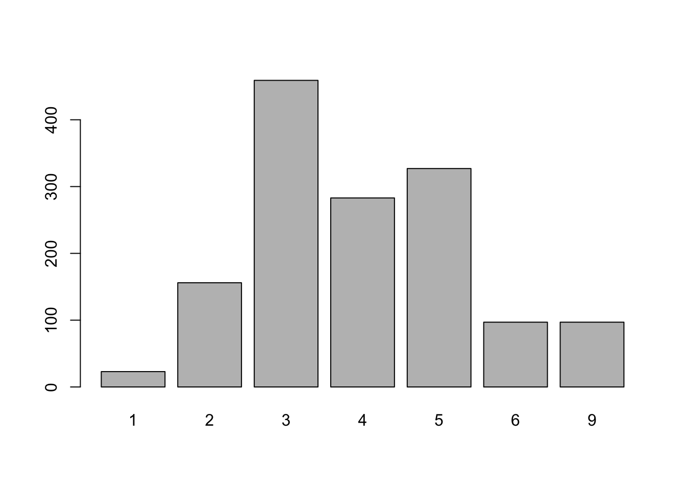
TEDS_2016$Tondu
Frequency Percent
1 23 1.595
2 156 10.818
3 459 31.831
4 283 19.626
5 327 22.677
6 97 6.727
9 97 6.727
Total 1442 100.000TEDS_2016$Tondu <- factor(TEDS_2016$Tondu, labels = c(
"Unification now",
"Status quo, unif. in future",
"Status quo, decide later",
"Status quo forever",
"Status quo, indep. in future",
"Independence now",
"No response"
))
library(ggplot2)
library(scales)
Attaching package: 'scales'The following object is masked from 'package:purrr':
discardThe following object is masked from 'package:readr':
col_factorggplot(TEDS_2016, aes(x = Tondu)) +
geom_bar(aes(y = (..count..) / sum(..count..), fill = Tondu)) +
scale_y_continuous(labels = percent) +
labs(
x = "Views on Taiwan's Political Status (Tondu)",
y = "Percentage of Respondents"
) +
theme_bw() +
theme(axis.text.x = element_text(angle = 45, hjust = 1)) +
scale_fill_manual(values = c(
"steelblue", "forestgreen", "khaki", "gray60",
"gold", "red", "darkgray"
))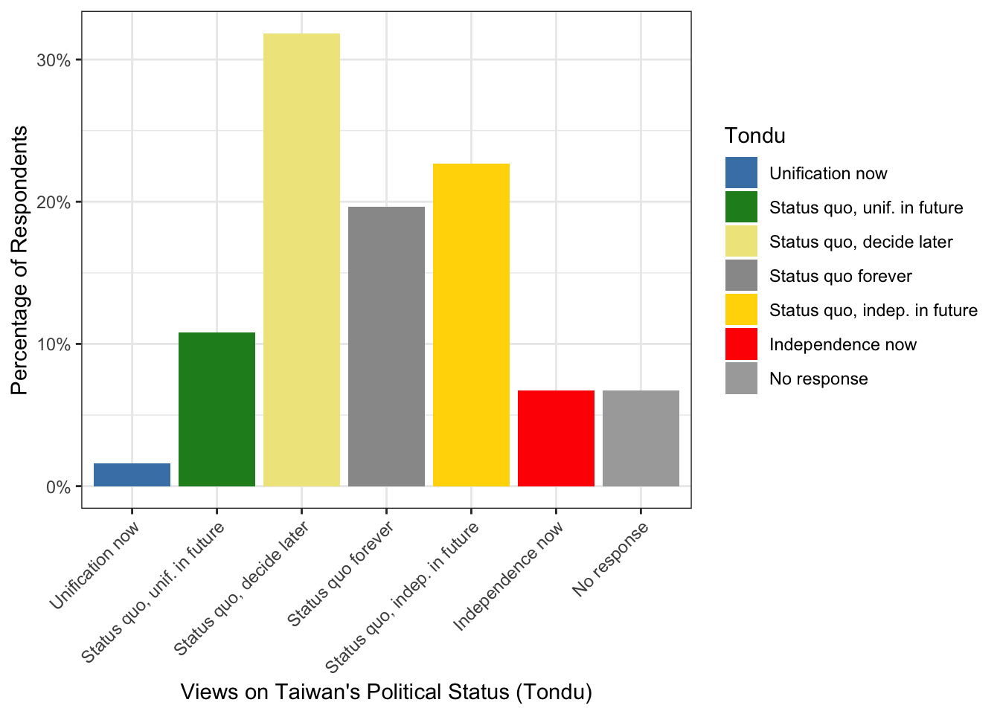